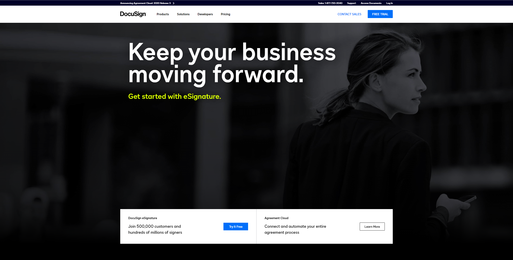
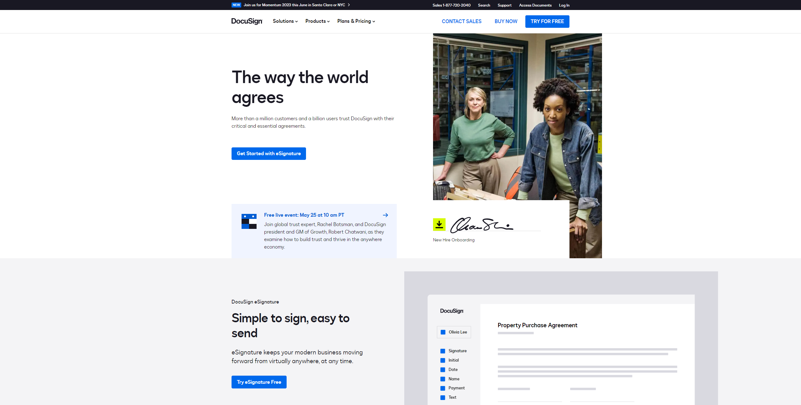
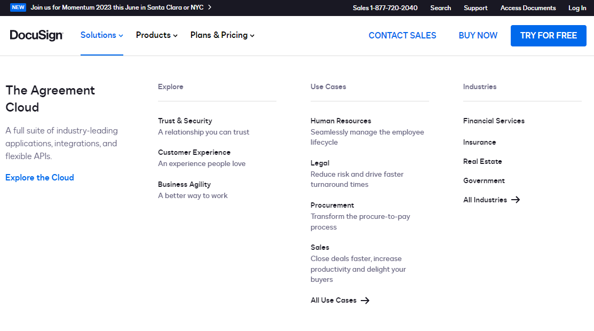
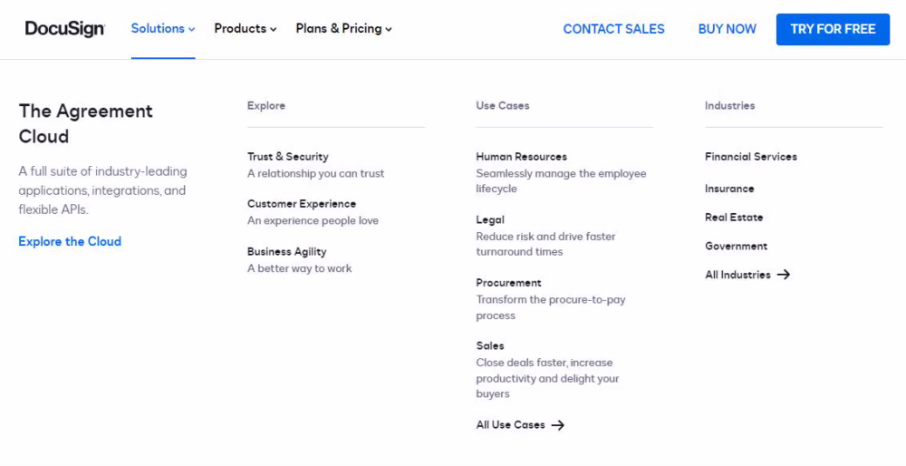
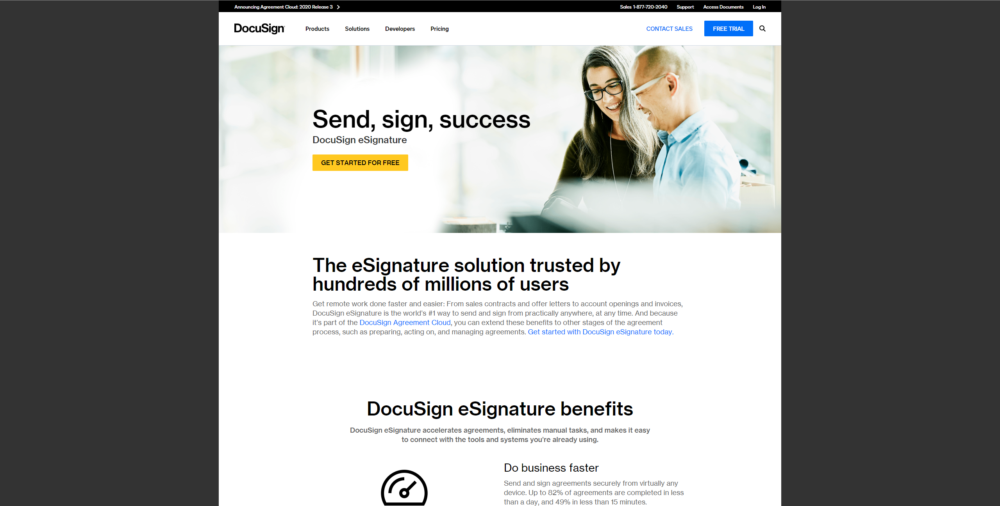
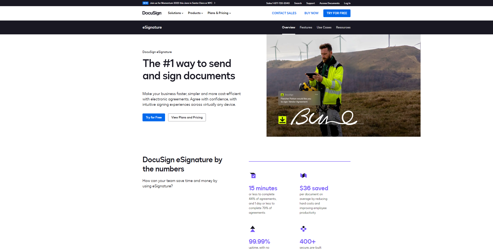
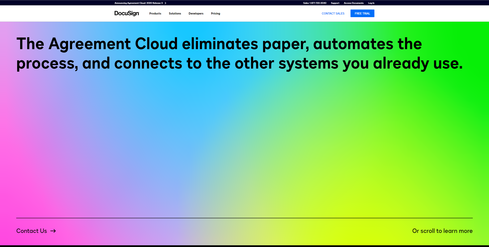
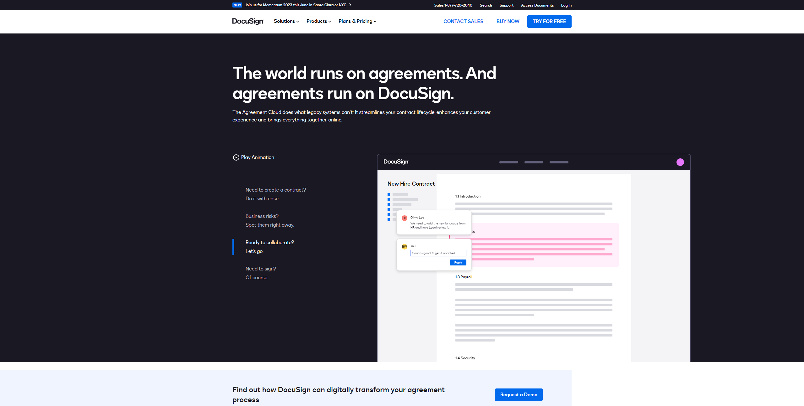
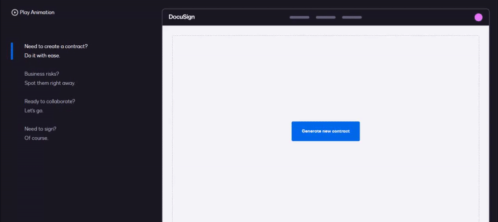

creating the new docusign.com: a 'case study'.
at the beginning of 2021, I was pulled into a project with my former software agency to migrate the docusign.com website from drupal to contentful and launch an entirely new website experience. by the end of the engagement, this was one of the largest projects I've ever been a part of. it was a huge learning experience.
here's my brief account of how we took docusign.com from this:
to this, utilizing a new design system and freshly baked component library:
part one: the back end.
in the beginning, I was one of two developers doing most of the backend work on the migration. we wrote a node.js script to take database dumps from drupal, extract the necessary page content, and use contentful's content management api to upload the pages to the new database.
it sounds straightforward, but the amount of effort that went into this task ended up being truly enormous!! the fact that we finished the work to a high standard of quality just shows what a strong team I was working with. we ran into too many edge cases to count, ranging from improper formatting on the original pages in the old database (extremely common) to simple typos. for the most part, our team sniped the big issues, and the docusign in-house team took care of everything else.
here's what I learned: the contentful api is not developer-friendly (or at least it wasn't when I worked with it). it took us a lot of experimentation and finagling to get everything to work correctly, and the documentation isn't super clear about many things. if I ever have to make a headless cms decision on a project in the future, I will recommend against contentful. the documentation of an api can really make or break the 'i' part of your api.
part two: the front end.
this is where the project really started to grow. to build the front-end of the new docusign.com, we ended up bringing on two junior developers and two seniors to supplement the existing team. the actual composition of the team fluctuated a bit over the months, but there were about eight people from our agency working on this.
docusign.com is a next.js application using react and typescript. one of the first major steps of creating the new website was collaborating with docusign's dxe team (really cool people, btw) to build a new component library and design system. this process was incredibly time-consuming due to the design - development feedback loop, but I think the final product ended up looking all the better for it. there weren't too many things that we ended up having to go back and rethink, either.
the navigation menu is the thing I worked on the most — I did a majority of the actual implementation work.
getting this menu to work perfectly, however, was a different story. the main issue of a large dropdown menu like this is often accessibility. one of the menu's biggest accessibility hurdles, known as focus trapping, was mainly implemented by a really smart senior developer on docusign's team.
getting this interaction to work nicely actually took quite a while. I felt that the extremely strict eslint rules in the docusign codebase, combined with the even stricter typescript conventions, made everything take much longer to write code for. those limitations heavily affected the development time of this menu, as well as a few other particularly complex components. we even had to cut some really pretty animations on this menu due to time constraints!
of course, we didn't just work on the front page of the website. we worked on almost every page on the docusign website, including a search system along with an very large footer to supplement the primary navigation menus.
because of this large scale, achieving actual consistency between the front-end and back-end was one of the biggest challenges. if the content model changed in the backend even slightly, it could cause an entire component to have its design changed, causing delays that could last weeks. excellent team cohesion and leadership on both sides was key to everything working out in the end.
more comparisons.
the page for esignature (docusign's flagship product) before redesign:
and after redesign:
the agreement cloud page before redesign:
and after redesign:
this page is one of the cooler ones, because it contains this entirely html-based (non-svg) animation.
this was very difficult to animate without the use of svg elements, but it was the only way we could thing of making it easily translatable into other languages.
in conclusion...
that's all for now, thanks for reading! I'm currently looking for a new programming job, so I'm trying to get some 'case study'-type blog posts done so people don't think I'm just some hack who's never worked on anything real. I'll be back soon, I think!
if you're reading this and you need a skilled generalist software engineer with a very keen eye for design, I'm raring to go. shoot me an email immediately!
currently listening to:
- Beautiful Birthday by RAISE A SUILEN
- Ancient Relics by xi
- Glamorous Sky by サカイ・アスカ
- Mirror of the World by 石渡 太輔 - in the running for best song ever written for a fighting game